第02讲 比较线段的长短

课程标准 | 学习目标 |
①理解两点之间线段最短的事实 ②两点间的距离和线段中点 | 1．理解两点之间线段最短的事实； 2．知道两点间的距离和线段中点的含义，并能进行线段的计算. |
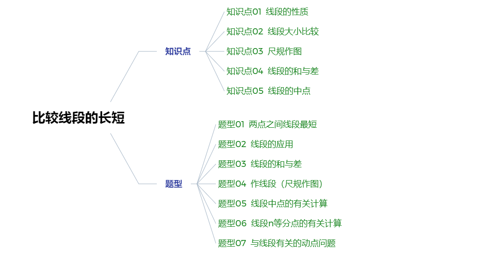

知识点01 线段的性质
两点之间的所有连线中，线段最短.简单地：两点之间线段最短.我们把两点之间线段的长度，叫做这两点之间的距离.
【即学即练1】
1．（2024·重庆·二模）高速公路是指专供汽车高速行驶的公路．高速公路在建设过程中，通常要从大山中开挖隧道穿过，把道路取直以缩短路程．其中的数学原理是（ ）

A．两点之间，线段最短 B．两点确定一条直线
C．平行线之间的距离最短 D．垂线段最短
知识点02 线段大小比较
1.比较线段大小的方法：（1）目测法；（2）度量法；（3）叠合法
2.叠合比较法：利用直尺和圆规把线段放在同一条直线上，使其中一个端点重合，另一个端点位于重合端点同侧，根据另一端点与重合端点的远近来比较长短．如下图：

【说明】线段的比较方法除了叠合比较法外，度量比较法也是常用的方法．
【即学即练2】
1．（23-24六年级下·上海宝山·期末）如图，点 、
、 在线段
在线段 上，点
上，点 、
、 分别是
分别是 、
、 的中点，
的中点，
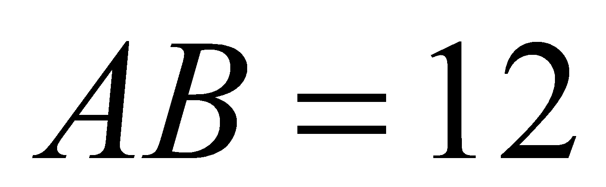
，且 ，那么线段
，那么线段 的长是 ．
的长是 ．知识点03 尺规作图
仅用圆规和没有刻度的直尺作图的方法叫做尺规作图.
【说明】（1）只使用圆规和直尺，并且只准许使用有限次，来解决不同的平面几何作图题．
（2）直尺必须没有刻度，无限长，且只能使用直尺的固定一侧.只可以用它来将两个点连在一起，不可以在上面画刻度．
（3）圆规可以开至无限宽，但上面也不能有刻度.它只可以拉开成之前构造过的长度．
【即学即练3】
1．（23-24六年级下·山东烟台·期中）作图题：如图，平面上有四个点A，B，C，D，根据下列语句画图：

(1)做射线 ；
；
(2)取一点P，使点P既在直线上又在直线 上；
上；
(3)若A、C两点之间的距离为4，B、D两点之间的距离为3，点M到A，B，C，D四点距离之和最短．画出点M的位置，并写出该最短距离和是___________．
知识点04 线段的和与差
如下图：线段AB上有一点C，则AC+BC=AB；AC=AB - BC； BC=AB - AC，
在这里线段AC、BC、AB表示线段的长度，如AC+BC=AB表示AC长度与BC长度之和等于AB长度.
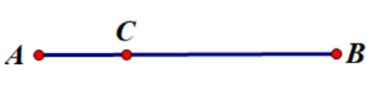
【即学即练4】
1．（23-24六年级下·山东淄博·期中）如图，点 是线段上两点，点
是线段上两点，点 为线段的中点，
为线段的中点， ，
， ．
．
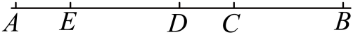
(1)图中共有_______条线段；
(2)求的长；
(3)若 ，求
，求 的长．
的长．
知识点05 线段的中点
线段的中点：把一条线段分成两条相等线段的点，叫做线段的中点．如下图所示，点C是线段AB的中点，则AC=CB=
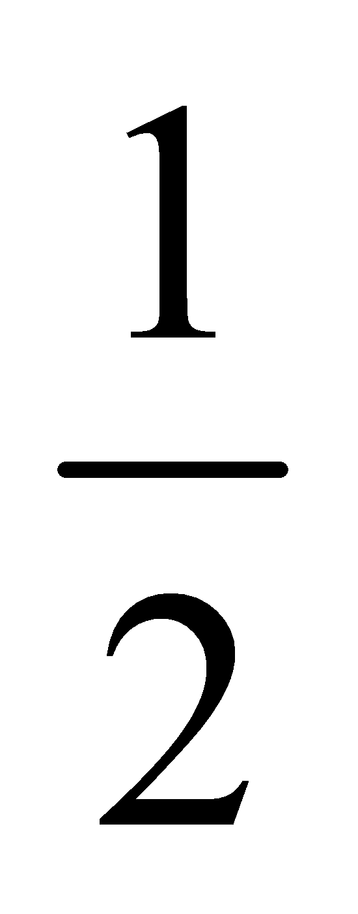
AB，或AB=2AC=2BC．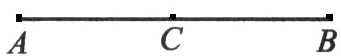
【说明】若点C是线段AB的中点，则点C一定在线段AB上．
【即学即练5】
1．（23-24七年级上·福建厦门·开学考试）线段上，M为 的中点，N为
的中点，N为 的中点，
的中点， ，
， ，
， （ ）．
（ ）．
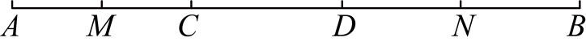
A． B．
B．
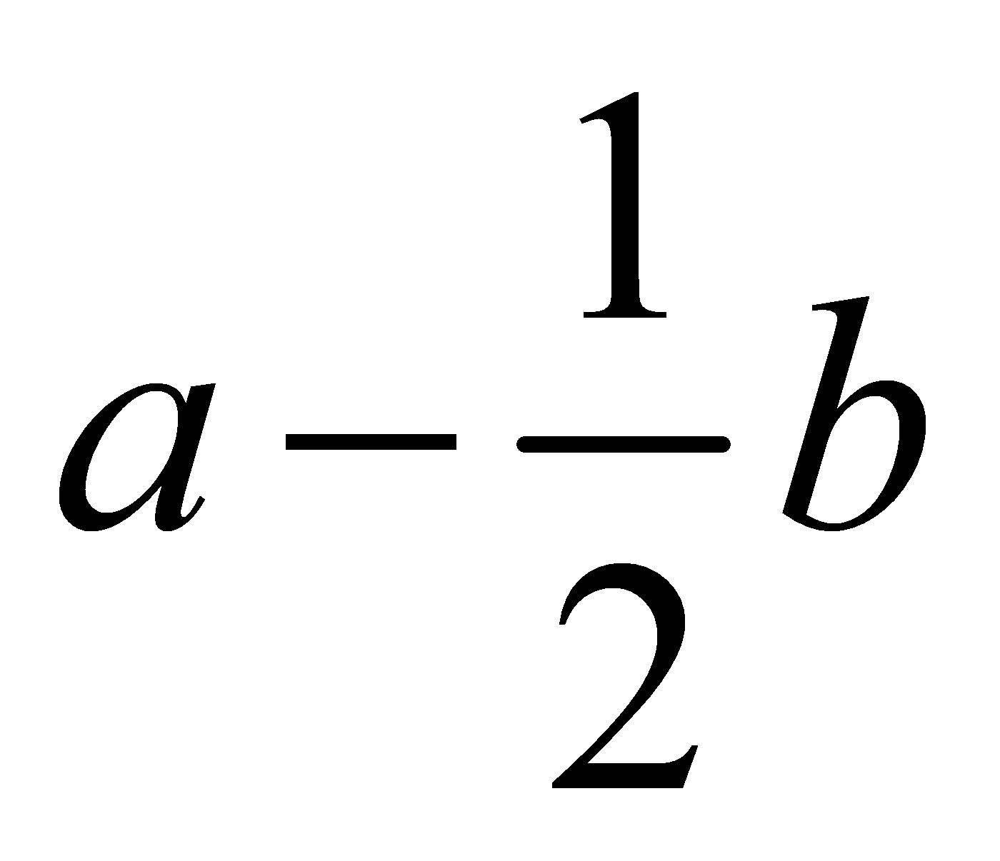
C．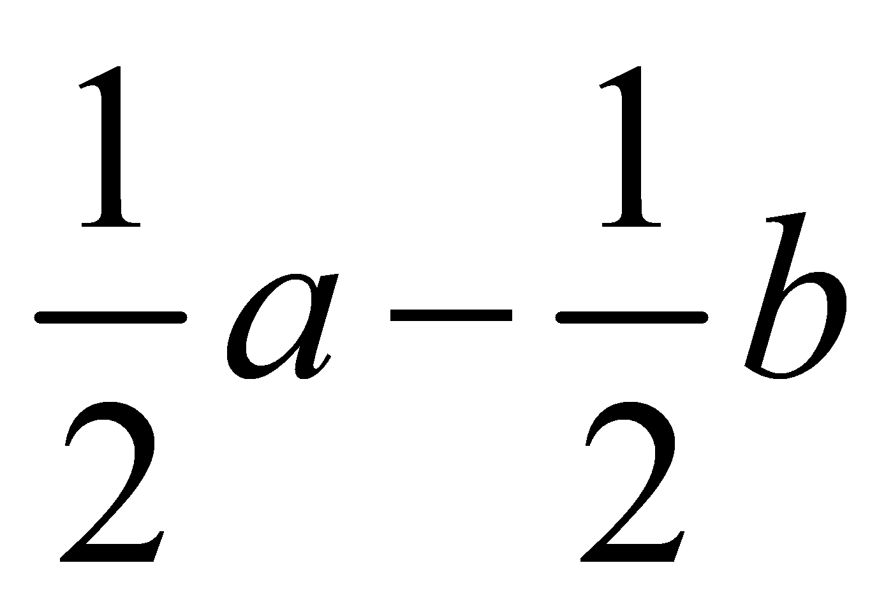
D．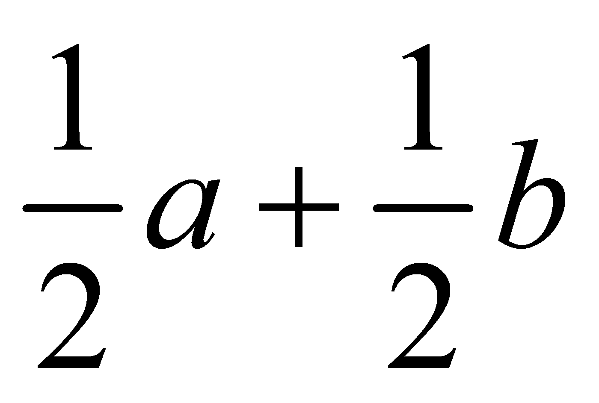
2．（23-24七年级上·四川自贡·期末）如图， ，
， ，
， ，是直线
，是直线 上的四个点，，分别是，的中点．
上的四个点，，分别是，的中点．
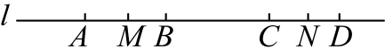
(1)如果 ，
， ，
， ，则
，则 的长为________cm；
的长为________cm；
(2)如果 ，
，
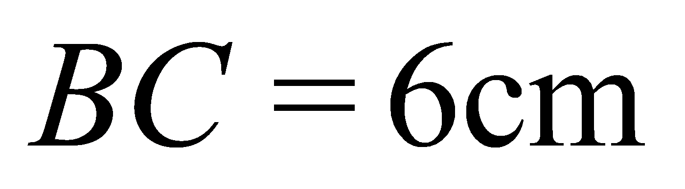
，则的长为_________cm；(3)如果 ，
，
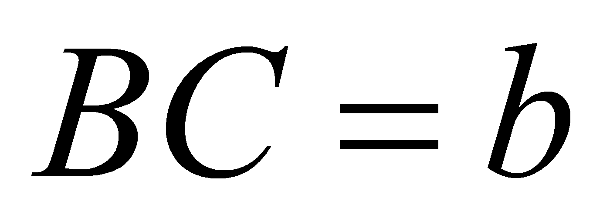
，求的长，并说明理由．
题型01 两点之间线段最短
【典例1】（23-24七年级上·福建漳州·期末）在下列现象中，可以用基本事实“两点之间线段最短”来解释的是（ ）
A．木匠弹墨线 B．打靶瞄准
B．打靶瞄准
C．弯曲公路改直 D．拉绳插秧
【变式1】（2024·河北·模拟预测）“愚公移山”是我国著名的寓言故事，它告诉了我们坚持不懈的道理．如图，假设愚公在运输山石等杂物时（从点 运输到点
运输到点 ），有
），有 条路可行，线路
条路可行，线路 ：折线．线路
：折线．线路 ：折线
：折线
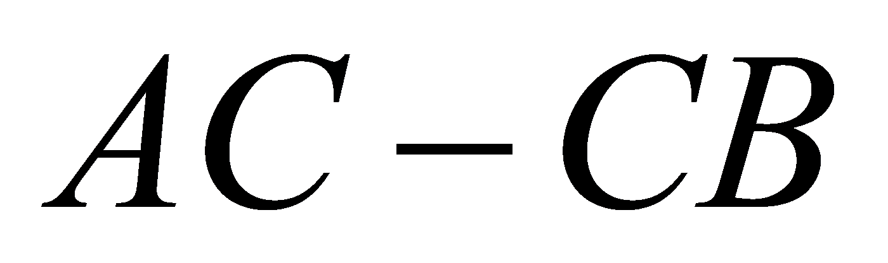
．线路 ：
： ．线路：线段AB．如果仅从距离最短考虑，愚公选取的线路应是（ ）
．线路：线段AB．如果仅从距离最短考虑，愚公选取的线路应是（ ）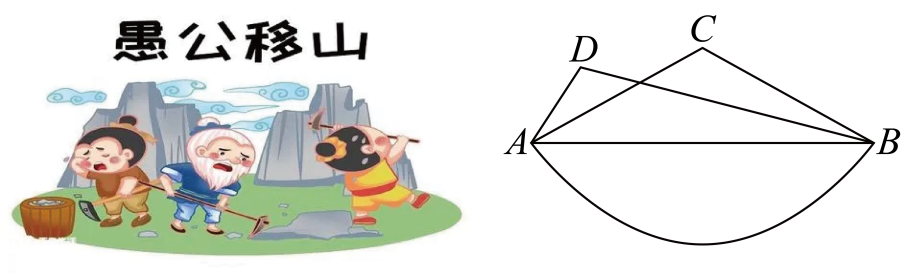
A．线路 B．线路 C．线路 D．线路
【变式2】（23-24八年级下·重庆开州·开学考试）直线 是一条河，
是一条河， ，
， 是在同侧的两个村庄，欲在上的
是在同侧的两个村庄，欲在上的 处修建一个水泉站，向，两地供水，现有如下四种铺设方案，图中实线表示铺设的管道，则处到，两地距离之和最短的方案是（ ）
处修建一个水泉站，向，两地供水，现有如下四种铺设方案，图中实线表示铺设的管道，则处到，两地距离之和最短的方案是（ ）
A．
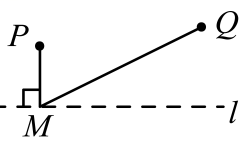
B．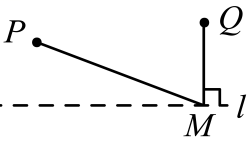
C．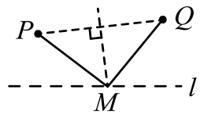
D．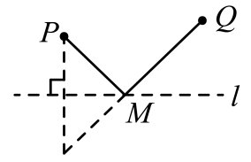
【变式3】（24-25八年级上·河南郑州·阶段练习）如图，一只电子蚂蚁从正方体的顶点处沿着表面爬到顶点处，电子蚂蚁的爬行路线在平面展开图（部分）中如实线所示，其中路线最短的是（ ）
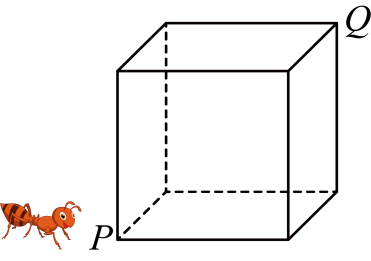
A．
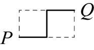
B．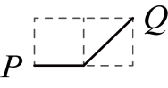
C．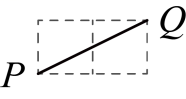
D．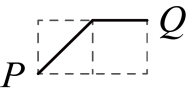
题型02 线段的应用
【典例2】（23-24七年级下·山东泰安·期中）一条铁路有 个火车站，若一列火车往返过程中必须停靠每个车站，则铁路局需为这条线路准备车票（ ）种．
个火车站，若一列火车往返过程中必须停靠每个车站，则铁路局需为这条线路准备车票（ ）种．
A． B． C．
C． D．
D．
【变式1】（23-24六年级下·山东东营·阶段练习）乘特快列车从济南西站出发，沿途经过泰安站、曲阜东站、滕州东站，最后到达枣庄站，那么从济南西站到枣庄站这段线路的火车票最多有（ ）
A．6种 B．20种 C．10种 D．12种
【变式2】（23-24七年级上·广西百色·期末）由百色站至南宁站的某趟动车，运行途中停靠的车站依次是：百色站—田阳站—田东站—平果站—隆安站—南宁站，那么铁路运营公司要为这条路线制作的往返车票有 种．
【变式3】（23-24七年级上·河南许昌·期末）前段时间，一条好消息迅速在长葛人朋友圈刷屏：大长葛也有地铁了！郑许市域铁路12月26日-27日免费试乘，“双城生活模式”正式启动．图中展示了郑许市域铁路长葛市域内的五个站点，若要满足乘客在这五个站点之间的往返需求，铁路公司需要准备 种不同的车票．

题型03 线段的和与差
【典例3】（24-25七年级上·全国·课后作业）已知点C在线段 上，
上，
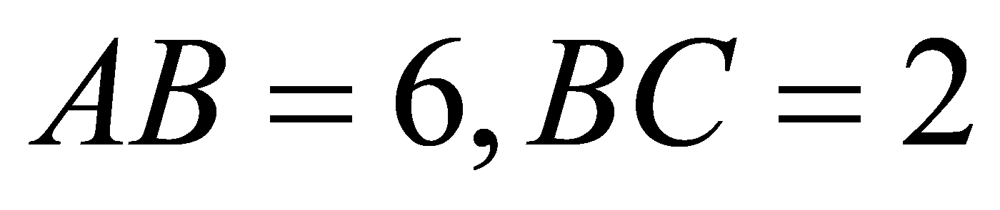
，则 ．
．【变式1】（23-24七年级上·全国·期末）线段AB的长为 ，延长AB到
，延长AB到 ，使
，使 ，再反向延长AB到
，再反向延长AB到 ，使
，使 ，则线段CD的长为
，则线段CD的长为  ．
．
【变式2】（23-24七年级上·全国·单元测试）同一条直线上有三点 且线段
且线段
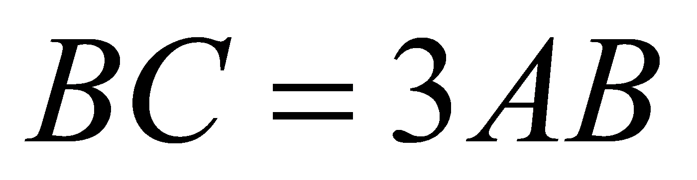
，点是 的中点，
的中点， 厘米，则线段
厘米，则线段 的长为 ．
的长为 ．【变式3】（24-25九年级上·全国·课后作业）已知线段 ．
．
(1)若点是线段上一点， ，则
，则 的长为 ；
的长为 ；
(2)若点是线段的中点，则 的长为 ；
的长为 ；
(3)若点是线段的一个三等分点，则的长为 ．
题型04 作线段（尺规作图）
【典例4】（24-25七年级上·全国·课后作业）如图，已知线段 ，用直尺和圆规作图（保留作图痕迹），并用字母表示所作线段．
，用直尺和圆规作图（保留作图痕迹），并用字母表示所作线段．
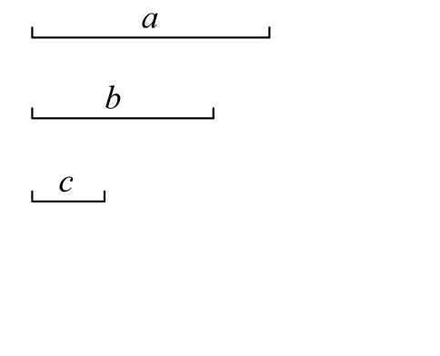
(1)作一条线段，使它等于
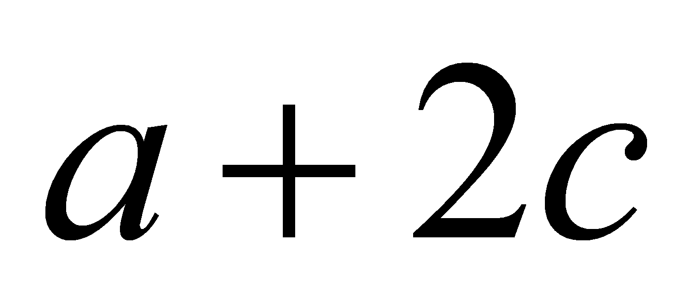
；(2)作一条线段，使它等于 ．
．
【变式1】（23-24七年级上·天津·期末）按要求画一画，再填空：
(1)画线段；
(2)延长线段到点C，使 ；
；
(3)延长线段 到点，使
到点，使 ；
；
(4)根据上述画法可知， ，
，
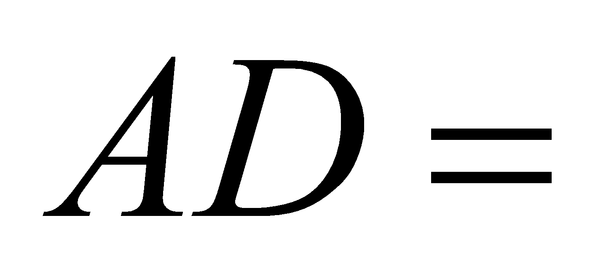
 ．
．【变式2】（23-24七年级上·福建福州·期末）如图，已知线段，其中 ，
，
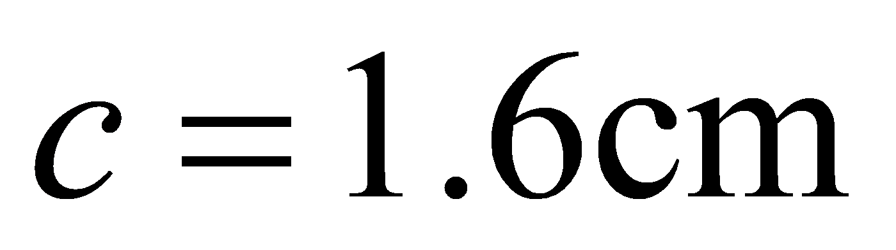
．(1)作线段，使得
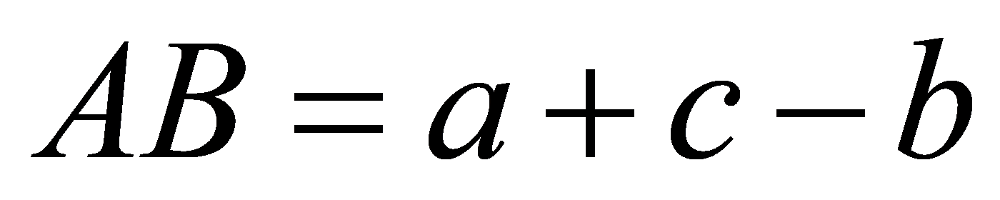
；(尺规作图，不写作法，保留作图痕迹)(2)若点P是（1）中所作的线段的中点，求线段 的长．
的长．
【变式3】（23-24七年级上·河南三门峡·阶段练习）如图，在平面内有三个点A，B，
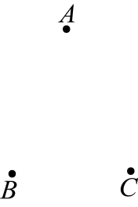
(1)请利用无刻度的直尺和圆规，按下面的要求作图
（保留作图痕迹，不写画法，不写结论）：
①连接 ，作射线；
，作射线；
②在射线上作线段 ，使
，使 ．
．
(2)在（1）中所作的图形中，若 ，
， ，点P是线段的中点，请在图中标出点P，并求线段
，点P是线段的中点，请在图中标出点P，并求线段 的长．
的长．
题型05 线段中点的有关计算
【典例5】（23-24七年级下·四川成都·阶段练习）如图，线设 ，点C是线段的中点，点D是线段的中点．
，点C是线段的中点，点D是线段的中点．
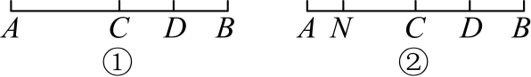
(1)如图①，求线段 的长；
的长；
(2)如图②，点N是线段上的一点，且满足，求 的长度．
的长度．
【变式1】（24-25七年级上·全国·课后作业）如果一点在由两条公共端点的线段组成的一条折线上且把这条折线分成长度相等的两部分，我们称该点为这条折线的“折中点”．已知点D是图中折线 的“折中点”，请解答以下问题：
的“折中点”，请解答以下问题：
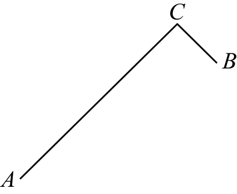
(1)①若，点D在线段______（填“”或“”）上；
②若
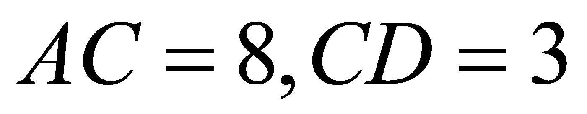
，则的长度为______．(2)若E为线段的中点， ，求
，求 的长度．
的长度．
【变式2】（23-24七年级上·安徽·单元测试）如图，为线段AB上一点，分别为 的中点．
的中点．
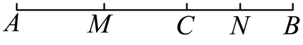
(1)若
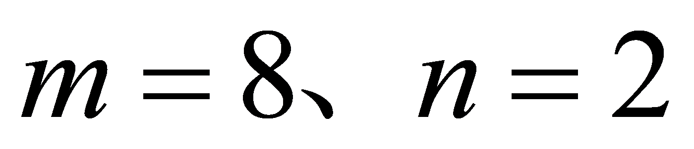
，求 的长；
的长；(2)若
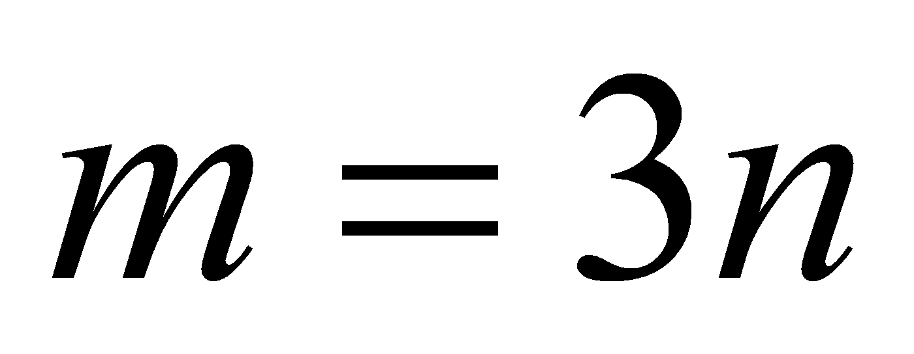
，求 的值．
的值．【变式3】（24-25七年级上·全国·单元测试）如图，，，，是直线上的四个点，， 分别是，
分别是， 的中点．
的中点．
(1)如果，，，则的长为________；
(2)如果，，则的长为_________；
(3)如果 ，
， ，求的长，并说明理由．
，求的长，并说明理由．
题型06 线段n等分点的有关计算
【典例6】（2023七年级上·全国·专题练习）二等分点：又叫线段的 ，把线段分成 的两部分．
即：如图，若点P是线段的中点，则 或
或
三等分点：把线段分成 的三部分．以此类推．
【变式1】（23-24六年级下·黑龙江哈尔滨·阶段练习）已知线段
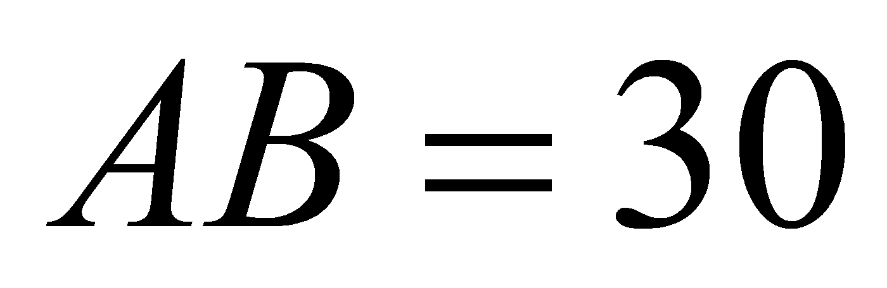
，延长至点C，使 ，点D、E均为线段延长线上两点，且
，点D、E均为线段延长线上两点，且 ，M、N分别是线段
，M、N分别是线段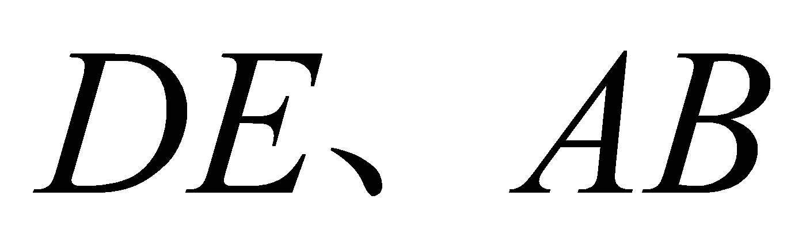
的中点，当点C是线段的三等分点时， 的长为 ．
的长为 ．【变式2】（23-24七年级上·河南商丘·期末）如图，为线段上一点，点为的中点，已知 ．
．
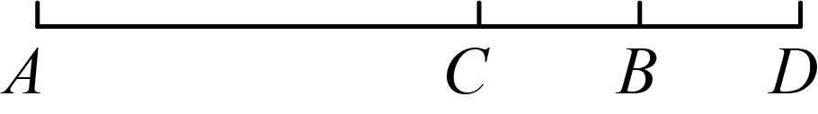
(1)求的长；
(2)若点是线段上靠近点A的三等分点，求 的长．
的长．
【变式3】（23-24七年级上·江西南昌·期末）已知线段 ，C是线段上任意一点（不与点A，B重合）．
，C是线段上任意一点（不与点A，B重合）．
(1)若M，N分别是 的中点，求的长度；
的中点，求的长度；
(2)若 ，
， ，求的长；
，求的长；
(3)在（2）的条件下，若 且G点在直线上，，求
且G点在直线上，，求 的长度．
的长度．
题型07 与线段有关的动点问题
【典例7】（22-23七年级上·河南郑州·阶段练习）如图①，已知点C在线段AB上，线段 厘米，
厘米， 厘米，点M，N分别是，的中点．
厘米，点M，N分别是，的中点．

(1)求线段的长度；
(2)根据第（1）题的计算过程和结果，设 ，其他条件不变，求的长度；
，其他条件不变，求的长度；
(3)动点P、Q分别从A、B同时出发，点P以2厘米/秒的速度沿AB向右运动，终点为B，点Q以1厘米/秒的速度沿 向左运动，终点为A，当一个点到达终点，另一个点也随之停止运动，求运动多少秒时：
向左运动，终点为A，当一个点到达终点，另一个点也随之停止运动，求运动多少秒时：
①点P恰好为线段 的中点？
的中点？
②直接写出C、P、Q三点中有一点恰好是以另两点为端点的线段的中点？（除①外）
【变式1】（2023七年级上·全国·专题练习）如图，是线段上一点， ，，两动点分别从点，同时出发沿射线向左运动，到达点处即停止运动．
，，两动点分别从点，同时出发沿射线向左运动，到达点处即停止运动．
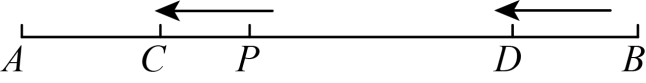
(1)若点，的速度分别是
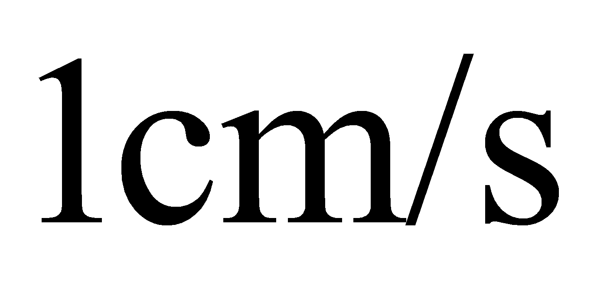
， ．
．①若 ，当动点，运动了
，当动点，运动了
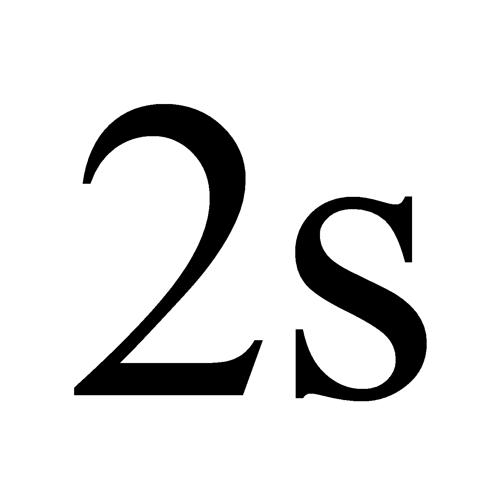
时，求 的值；
的值；②若点到达中点时，点也刚好到达的中点，求 ；
；
(2)若动点，的速度分别是， ，点，在运动时，总有
，点，在运动时，总有 ，求的长度．
，求的长度．
【变式2】（2023七年级上·全国·专题练习）已知：如图1，M是定长线段上一定点，C、D两点分别从M、B出发以 、
、 的速度沿直线向左运动，运动方向如箭头所示（C在线段
的速度沿直线向左运动，运动方向如箭头所示（C在线段
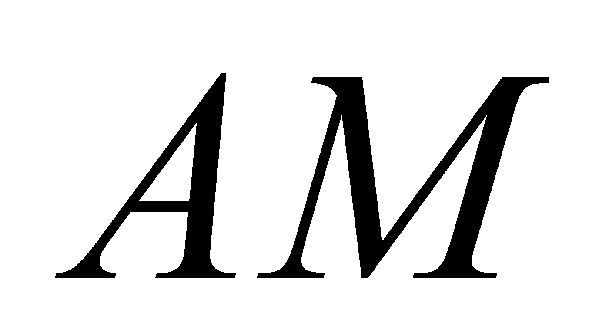
上，D在线段 上）
上）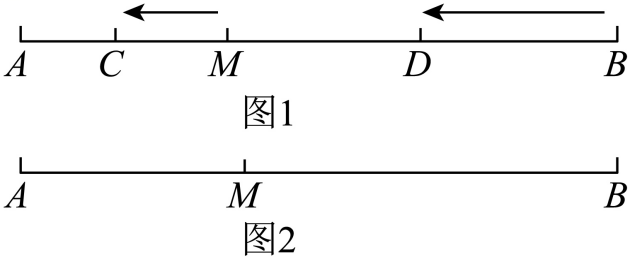
(1)若 ，当点C、D运动了，求
，当点C、D运动了，求 的值．
的值．
(2)若点C、D运动时，总有 ，直接填空：
，直接填空： ___________．
___________．
(3)在（2）的条件下，N是直线上一点，且 ，求
，求
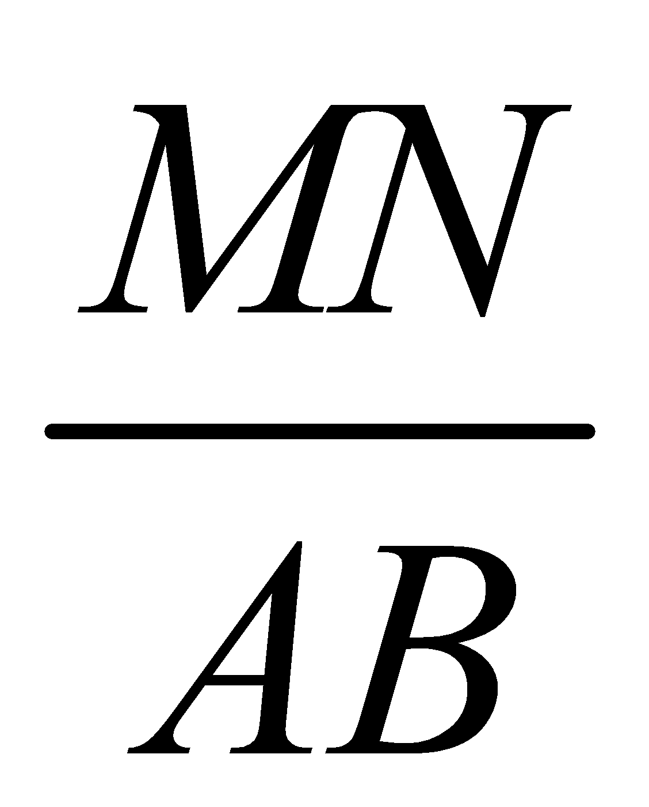
的值．【变式3】（23-24七年级上·江西南昌·期末）已知：如图，点M是线段上一定点， ，C、D两点分别从M、B出发以、的速度沿直线向左运动，运动方向如箭头所示（C在线段上，D在线段上）
，C、D两点分别从M、B出发以、的速度沿直线向左运动，运动方向如箭头所示（C在线段上，D在线段上）
(1)若 ，当点C、D运动了
，当点C、D运动了
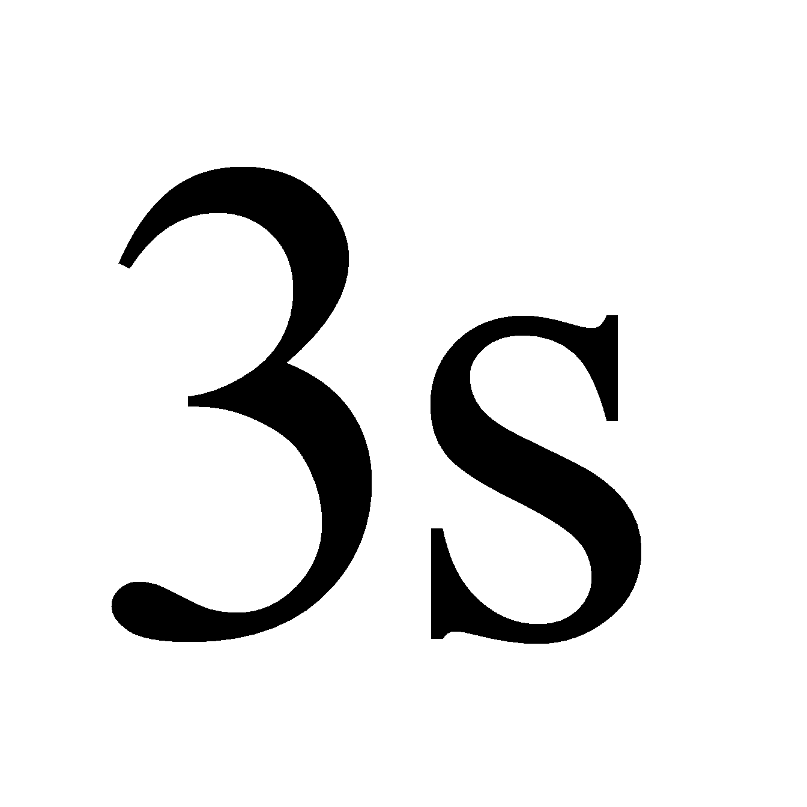
，此时 ， ；（直接填空）
；（直接填空）(2)当点C、D运动了，求的值；
(3)若点C、D运动时，总有，则 ；（直接填空）
(4)在（3）的条件下，是直线上一点，且，求的值．
一、单选题
1．（24-25七年级上·辽宁·期末）在直线 上顺次取三点
上顺次取三点 、
、 、
、 ，使线段
，使线段 ，
， ，则线段
，则线段 的长为（ ）
的长为（ ）
A． B．
B． C．
C． D．
D．
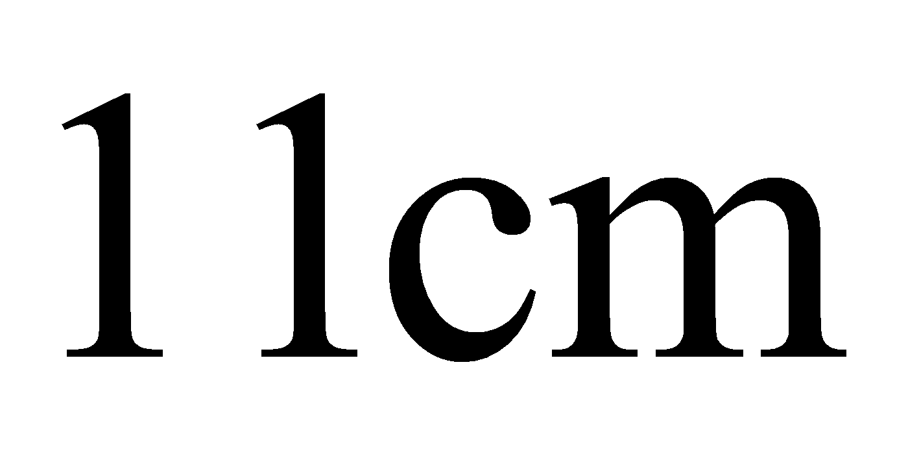
2．（24-25七年级上·全国·课后作业）有下列三个生活、生产现象：①植树时，只要定出两棵树的位置，就能确定同一行树所在的直线；②从A地到B地架设电线，总是尽可能沿着线段 架设；③把弯曲的公路改直，就能缩短路程．其中，可用基本事实“两点之间的所有连线中，线段最短”来解释的现象有（ ）．
架设；③把弯曲的公路改直，就能缩短路程．其中，可用基本事实“两点之间的所有连线中，线段最短”来解释的现象有（ ）．
A．①② B．①③ C．②③ D．①②③
3．（24-25七年级上·全国·课堂例题）已知点是线段的中点，点 是线段的三等分点．若线段
是线段的三等分点．若线段 ，则线段
，则线段 的长为（ ）
的长为（ ）
A．
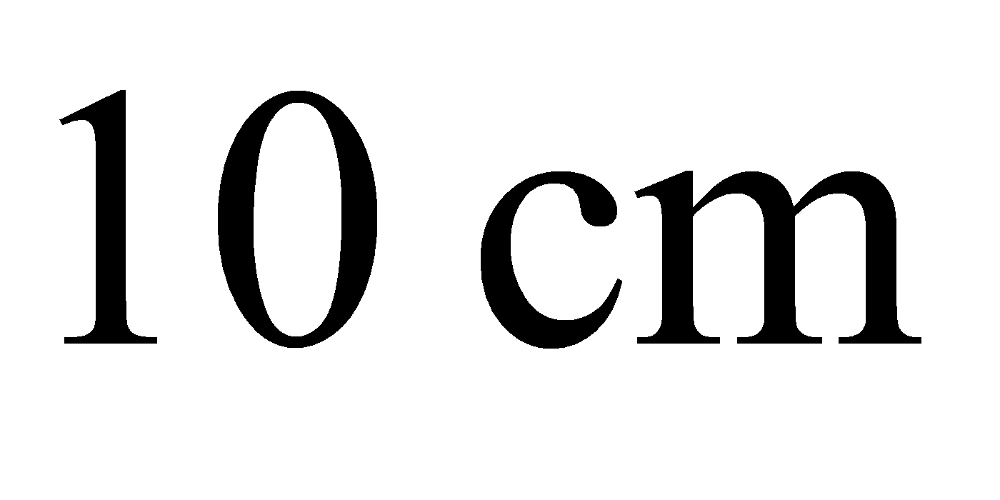
B． C．或 D．或
C．或 D．或
4．（23-24六年级下·山东济南·开学考试）如图，已知是线段中点，延长线段至，使，则下列结论中①；② ；③
；③ ；④
；④ ；⑤
；⑤ ；⑥，正确的有（ ）
；⑥，正确的有（ ）

A．①②④⑥ B．①②⑤⑥ C．①②③④ D．②③⑤⑥
5．（23-24七年级下·重庆沙坪坝·开学考试）如图，已知C是线段上的一点，P、Q分别是线段 的中点，M、N分别是线段的中点，则的值为（ ）
的中点，M、N分别是线段的中点，则的值为（ ）
A． B．
B． C．
C． D．
D．
二、填空题
6．（23-24七年级上·江西赣州·期末）把原来弯曲的河道改直，河道长度变短，其原理能用基本事实“ ”解释．
7．（23-24六年级下·黑龙江大庆·期末）往返A，B两地的客车，中途停靠两个站，客运站根据两站之间的距离确定票价（距离不相等，票价就不同）．若任意两站之间的距离都不相等，则不同的票价共有 种．
8．（23-24六年级下·全国·假期作业）在同一班上学的小明、小伟、小红三位同学住在A，B，C三个住宅区，如图（A，B，C三点在一条直线上），且 ．他们打算合租一辆接送车去上学，由于车位紧张，准备在此三个点之中只设一个点为停靠点．为使三位同学步行到停靠点的路程之和最小，你认为停靠点的位置应该设在点 处．
．他们打算合租一辆接送车去上学，由于车位紧张，准备在此三个点之中只设一个点为停靠点．为使三位同学步行到停靠点的路程之和最小，你认为停靠点的位置应该设在点 处．
9．（23-24七年级下·陕西西安·阶段练习）如图，一条直线上从左到右依次有A、B、C、…、S共19个点，已知点A与其他点的距离之和为2024，点D与其他点的距离之和为1949，若，则点B与点C之间的距离为 ．
10．（23-24六年级下·黑龙江哈尔滨·期中）已知点是线段AB上的点， ，点是直线
，点是直线 上一点，
上一点， ，若点
，若点 是DB的中点，则线段CE的长为 ．
是DB的中点，则线段CE的长为 ．
三、解答题
11．（24-25七年级上·全国·课后作业）如图， 两个村庄在一条河（不计河的宽度）的两侧，现要建一座码头，使它到两个村庄的距离之和最小，在图中画出点C的位置．
两个村庄在一条河（不计河的宽度）的两侧，现要建一座码头，使它到两个村庄的距离之和最小，在图中画出点C的位置．
12．（24-25七年级上·全国·单元测试）如图，点P是线段上的一点，点M，N分别是线段 的中点．
的中点．
(1)如图①，若点P是线段的中点，且 ，则线段长_____
，则线段长_____ ，线段
，线段 长______；
长______；
(2)如图②，若点P是线段上的任意一点，且 ，求线段的长．
，求线段的长．
13．（24-25七年级上·全国·单元测试）如图，点B，D在线段上．
(1)填空：
①图中有______条线段，以A为端点的线段有_____条；
② _____
_____ ______．
______．
(2)若D是线段的中点，点B在点D的右侧，且 ，求线段的长．
，求线段的长．
14．（23-24七年级下·山东淄博·期中）如图，已知点，，，．按要求画图（保留作图痕迹）．
(1)连接 ，作射线
，作射线 ，并在射线上截取；
，并在射线上截取；
(2)画点P，使 的值最小；
的值最小；
(3)画点E，使点E既在直线 上，又在直线上．
上，又在直线上．
15．（23-24七年级上·全国·单元测试）A，B 两点在数轴上的位置如图所示，其中点 A 对应的有理数为 ，且
，且 ．动点 P 从点 A 出发，以每秒2个单位长度的速度沿数轴正方向运动，设运动时间为t秒（t
．动点 P 从点 A 出发，以每秒2个单位长度的速度沿数轴正方向运动，设运动时间为t秒（t ）．
）．
(1)当 时，
时， 的长为 ，点 P 表示的有理数为 ；
的长为 ，点 P 表示的有理数为 ；
(2)当 时，求t的值；
时，求t的值；
(3)M为线段的中点，N 为线段 的中点．在点 P 运动的过程中，线段的长度是否发生变化？若变化，请说明理由；若不变，求出线段的长．
的中点．在点 P 运动的过程中，线段的长度是否发生变化？若变化，请说明理由；若不变，求出线段的长．
16．（23-24七年级上·江苏常州·期末）直线l上的三个点A、B、C，若满足 ，则称点C是点A关于点B的“半距点”．如图1， ，此时点C就是点A关于点B的一个“半距点”．
，则称点C是点A关于点B的“半距点”．如图1， ，此时点C就是点A关于点B的一个“半距点”．
若M、N、P三个点在同一条直线m上，且点P是点M关于点N的“半距点”， ．
．
(1) ．
． ；
；
(2)若点G也是直线m上一点，且点G是线段 的中点，求线段
的中点，求线段 的长度．
的长度．
17．（24-25七年级上·江苏南通·开学考试）如图，数轴上点A，B表示的有理数分别为 ，3，点P是射线上的一个动点（不与点A，B重合），M是线段靠近点A的三等分点，N是线段
，3，点P是射线上的一个动点（不与点A，B重合），M是线段靠近点A的三等分点，N是线段 靠近点B的三等分点．
靠近点B的三等分点．
(1)若点P表示的有理数是0，那么的长为___________；若点P表示的有理数是6，那么的长为___________．
(2)点P在射线上运动（不与点A，B重合）的过程中，的长是否发生改变？若不改变，请写出求的长的过程；若改变，请说明理由．
18．（23-24七年级上·安徽蚌埠·开学考试）已知点C在线段上，，点D、E在直线上，点D在点E的左侧，

(1)若， ，线段DE在线段上移动，
，线段DE在线段上移动，
①如图1，当E为中点时，求的长；
②当点C是线段 的三等分点时，求的长；
的三等分点时，求的长；
(2)若，线段在直线上移动，且满足关系式，求 ．
．